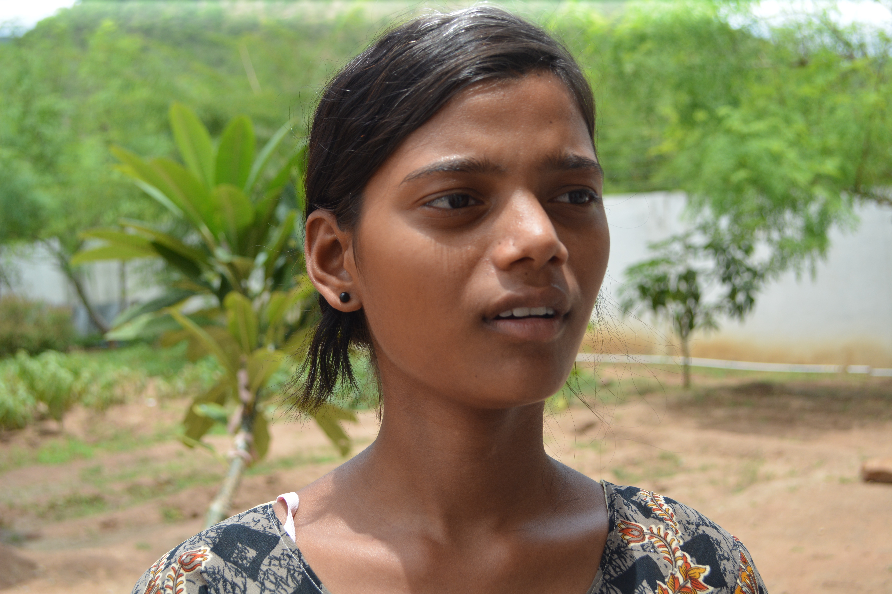

Voices of Aarti
Manjula
Manjula’s Journey – from red-light shadows to classroom lights
← Back to all stories
“My parents fought constantly. My mother was a sex worker, and my father disagreed with her choices, leading to perpetual arguments. These were only worsened when our neighbours discovered my mother’s profession and completely disassociated from us. The fights escalated so badly that my parents decided to separate. By this time, my mother had contracted HIV from one of her clients, and she passed away soon after. My grandfather brought me to Sandhyamma’s care at Aarti Home, where I was enrolled and quickly began my studies.
I was doing very well until my brother called out of nowhere and asked that I come home for my summer break. I hadn’t seen him in months and was very excited to go. However, when I reached home, I discovered that he had arranged for me to be married off to one of his friends for a huge sum of money. I was absolutely distraught and thought that my life had come to an end; I was scared that I would have to turn to my mother’s profession as I hadn’t been able to complete my education.
Thankfully, I was married for only three days before my grandfather intervened and brought me back to Aarti Home. The next few weeks were grueling for me as I suffered from nightmares and had become scared of many things. Sandhyamma sat me down, and we talked a little every day until I slowly grew out of my shell again!
I want to be independent and fend for myself, but I also want to break the cycle of stigma that many rural villages in India are still guilty of. I want to be able to enforce education and help young girls choose professions that they are suited for.”